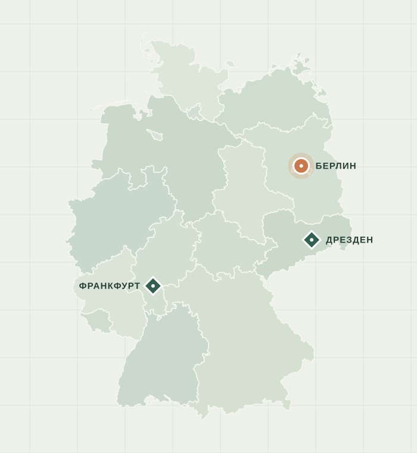

ПУТЕШЕСТВИЕ НАЧИНАЕТСЯ ЗДЕСЬ
Германия,
ближе.
Три города, три разных характера.
Одна карта, чтобы их открыть.
От истории на улицах Берлина до силуэта Франкфурта — выберите точку на карте и отправляйтесь в небольшое путешествие.
Исследовать города ↗01 — 03ГОРОДА ГЕРМАНИИ
ИНТЕРАКТИВНАЯ КАРТА
DE / 01Найдите свой город.

ВЫБЕРИТЕ НАПРАВЛЕНИЕ
Три города. Три истории.
У каждого города свой ритм.
С какого начнёте вы?
О ПРОЕКТЕ
Немного географии.
Много поводов увидеть больше.